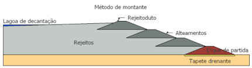
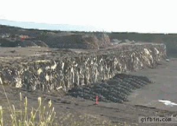
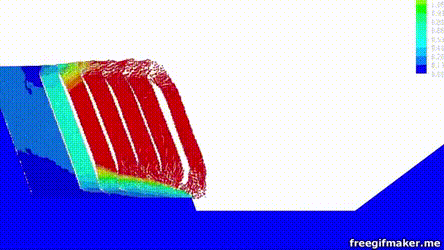
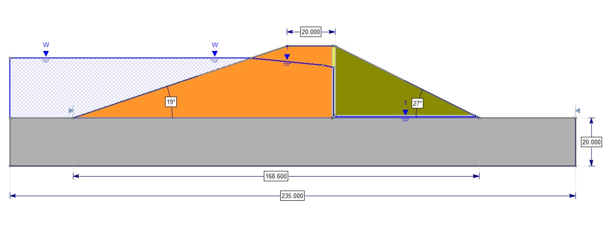
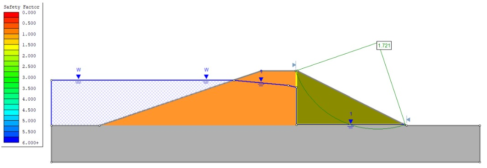
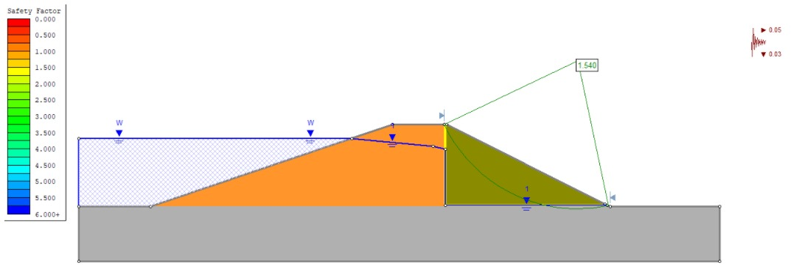
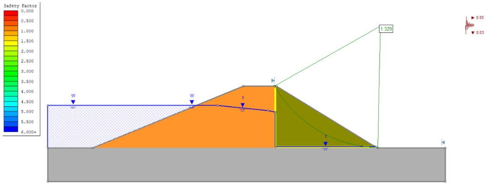

O estudo de caso relaciona através da análise de dados o risco de rompimento das barragens de contenção de rejeito com a variável sísmica gerada pelos desmontes com explosivos, visto que as ondas love e rayleigh causam o desmoronamento de vários prédios em situação sísmica análoga como os terremotos.
Sendo que esta objetiva avaliar a estrutura de barragens a montante durante o processo de detonação de taludes de minas a céu aberto adjacentes, aplicando simulações a fim de classificar os riscos observados, através de um quadro comparativo.
BARRAGEM A MONTANTE
Como funciona?
A etapa de tratamento de minérios tem o objetivo de gerar um produto comercializável, denominado concentrado, mas o processo também gera o rejeito, que é um produto descartável. Visto que, o volume de rejeitos produzido ao final do processo é grande, se torna necessário fazer a disposição dos mesmos, e uma opção para realizar este trabalho é utilização de barragem de rejeitos. (CETEM, 2010, p.831)

No método à montante, os rejeitos depositados são aproveitados para formar a estrutura de contenção, sendo que a fração mais grossa fica próxima ao maciço e as lamas vão em direção ao reservatório de decantação. Segundo Araújo (2006), inicialmente a execução deste tipo de barragem parte da construção de um dique de partida, este é comumente de material argiloso ou enrocamento compactado. Posteriormente, o rejeito é inserido na barragem na linha de simetria do dique, formando então a praia de deposição, que virará a fundação desta, e eventualmente fornecerá material para a estruturação do próximo alteamento.
Fonte Sísmica

Desmonte por Explosivos
Segundo Dorneles (2013), o desmonte com explosivos é o mais utilizado por minimizar os gastos e otimizar os prazos. Porém esse desmonte deve ser controlado e cuidadoso, pois há danos associados ao seu uso que devem ser minimizados ou evitados. Dentre eles as ondas sísmicas ou vibrações, que são geradas no momento que os explosivos são detonados.
Propagação da Ondas
Se tratando do corpo, Nieble (2017), a composição das rochas influencia na maneira que as ondas se propagam no maciço rochoso. Locais com uma litologia mais homogênea tendem a propagar as vibrações com maior facilidade e não modificam a intensidade e a trajetória da onda. Mas em maciços com alto grau de fraturamento, tipos litológicos diferentes e variedade de estruturas geológicas as vibrações terão suas propriedades alteradas ao longo da propagação.

Normas Reguladoras
NBR 9653
Efeitos provocados pelo uso de explosivos nas minerações em áreas urbanas
NRM 16
Operações com Explosivos e Acessórios
Guia de Diretrizes para a Elaboração de Projeto de Barragens
FS= 1,1; Kv= 0,03g; Kh= 0,05g Situação sem sismicidade no corpo
Parâmetros de Testes
Analisar o nível de segurança em relação a ruptura, levando em conta a necessidade em adotar medidas de estabilização ou para reavaliar algumas características de projeto, tendo-se assim obras com execução mais seguras e econômicas.
TESTES
Os métodos de análise de estabilidade simplificada calculam o fator de segurança de forma fácil e rápida, entretanto, não satisfazem completamente o equilíbrio de força e momento, existindo a possibilidade dos fatores de segurança determinados por esses métodos serem diferentes em comparação aos fatores de segurança definidos pelos métodos que satisfazem completamente a condição de equilíbrio.
Método
Características
Método de Fellenius
Sueco ou das Fatias; Equilíbrio de momentos; Conservador; Seperestimado em 15% compardo ao método de Bishop.
Método de Bishop
Modificação do Método de Fellenius
Método de Morgenstern e Price
Rigoroso; Aplica-se a qualquer superfície de ruptura; Complexo.
Método de Spencer
Rigoroso Satisfaz todas as condições de equilíbrio; Verificação analítica inviável.
Em vista disso, foi utilizado os métodos Bishop Simplificado, Spencer e Morgenstern (GLE), para definir o fator de segurança associado a estabilidade dos taludes da barragem à montante no software Slide.
Para simular uma barragem foram utilizados dois tipos de rejeitos intitulados como Jazida 1 e Jazida 2, com propriedades distintas e valores ilustrativos, além do material da fundação e filtro, demonstrados na tabela abaixo.
Jazida 1
Fundação
Filtro
Jazida 2
Peso específico (kN/m³)
21
18
17
22
Coesão (kN/m²)
15
10
0
30
A estrutura, exposta abaixo, foi dimensionada no software e representa o dique de partida, com um talude externo de inclinação 2 para 1, com filtros vertical e horizontal com 1 metro de largura.
Dimensionamento do talude da barragem modelo

Inicialmente o maciço foi analisado em condição estática, Kh = 0 e Kv = 0.
Método de Bishop Simplificado Método de Morgenstern & Price Método de Spencer

Logo após foi possível obter valores distintos com o uso de Kh= 0,05 e Kv = 0,03.
Método de Bishop Simplificado durante evento sísmico Método de Morgenstern & Price durante evento sísmico

Ademais, foi observado o efeito da sismicidade em um talude a montante com uma maior inclinação, onde inicialmente era de 27° para 31°.
Método de Bishop Simplificado com talude de maior inclinação Método de Morgenstern & Price com talude de maior inclinação

É observável que os valores do fator de segurança diminuíram consideravelmente, entretanto, permanecem dentro da zona aceitável. Além da sismicidade é possível avaliar o maciço com outras variáveis, como a angulação do talude e as propriedades do material, no caso o rejeito. Sendo assim, diversos fatores podem influenciar na estabilidade da barragem, e quando são associados ao fator sísmico gerado pelas detonações, pode levar o talude à ruptura. Fato que pode ser observado na tabela abaixo:
Situações Problemas
Método de Bishop Simplificado
Método de Morgenstern & Price
Kh = 0 e Kv = 0
1,726
1,721
Kh= 0,05 e Kv = 0,03
1,543
1,540
27° para 31°
1,333
1,329
Sendo assim, é possível observar, em condição estática (Kh = 0 e Kv = 0), que os métodos de Spencer e Morgenstern & Price obtiveram valores mais conservadores que o método de Bishop Simplificado, com fatores de segurança dentro do normal, ficando acima de 1,5.
Utilizando Kh = 0,05 e Kv = 0,03, o método de Morgenstern & Price permaneceu com valores mais conservadores e o fator de segurança em ambos diminuiu consideravelmente, mas permaneceu dentro dos parâmetros desejados.
E com uma inclinação maior (27° para 31°) o fator de segurança diminuiu significativamente, entrando em um faixa crítica de estabilidade, mas dentro dos parâmetros estabelecidos pela Agência Nacional das Águas.
ENTENDA MAIS
O estudo do impacto do desmonte por explosivos nas barragens de alteamento a montante foi feito através de uma revisão bibliográfica, que permitiu o entendimento dos parâmetros necessários para realização dos testes e escolha dos métodos de análise. Então, estes fatores foram apontados juntamente com as variáveis envolvidas, possibilitando a execução de um estudo no software Slide Rocscience para o cálculo da estabilidade, em seguida foi feita a elaboração de uma cartilha com as informações e resultados obtidos.
A partir da análise realizada o que se pode concluir é que apesar do fator de segurança das barragens ser afetado pelas vibrações geradas pelo desmonte, tendo de certa forma uma influência na estabilidade dos taludes que compõem o barramento, estas não podem ser consideradas como a causa do rompimento de barragens a montante. Além dos coeficientes sísmicos gerados, fatores como inclinação do talude e composição do rejeito devem ser observados, pois estão diretamente relacionados com a estabilidade.
Portanto, todas as condições citadas devem ser avaliadas, buscando se fazer um desmonte controlado de modo que a estrutura da barragem não seja afetada de maneira significativa.